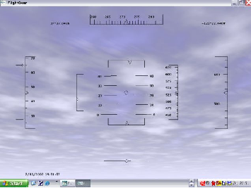

The following is a description of the main systems for controlling the program and
piloting the plane. It is assumed that the reader is already familiar with flying,
possibly from experience on other simulators. If you are completely new to
flying, the tutorials in section 6 are a better resource for learning to fly using
FlightGear.
A short leaflet showing the standard keys and designed to be printed can be found at
http://www.flightgear.org/Docs/FGShortRef.pdf.
A reference to most of the keyboard controls can be found under the Help menu in the
simulator.
Depending on the type of aircraft, you may have to start the engine(s) before you can go
flying. The instructions below are generic. Check the aircraft help or aircraft tutorials for
more specific instructions.
Once you’ve started the engine, you should check whether the parking brakes are
engaged. If so, press the ‘B’ to release them.
For piston-engined aircraft, the magnetos are controlled by the ‘{’ and ‘}’ keys.
On most aircraft, the starter is engaged using the ‘s’ key. On multi-engined
aircraft you can select which engines to control. Use ‘ to select all the engines
at once. Most magnetos have 4 positions - OFF, LEFT, RIGHT and BOTH.
So, to start the selected engine, press the ‘}’ key three times, then hold down
‘s’.
Note that the starting procedure for powerful WWII-era fighter aircraft is often more
complex. See the aircraft help for details.
Starting a turbo-prop engine generally requires simply moving the condition lever from
Off to Idle, using ’m’.
Starting a jet aircraft is significantly more complex, and the controls vary between
different aircraft.
- Set cutoff ON
- Engage the starter
- Once the engines spools up to approximately 5% N1, set cutoff OFF
- Disengage the starter once the engine has reached operational speed.
While joysticks, yokes and rudder pedals are supported, you can fly FlightGear using the
keyboard alone or in conjunction with a mouse, described below.
However you control the aircraft, you will need to use the keyboard for at least some
controls.
These key bindings are not hard-coded, but user-adjustable. You can check and
change these setting via the file keyboard.xml which can be found in the main
FlightGear directory. This is a human-readable plain ASCII file. Although it’s perhaps
not the best idea for beginners to modify this file, more advanced users will find it
useful to change key bindings according to their wished, e.g. to match other
simulators.
In order to have full control of the plane during flight via the keyboard you should ensure
that NumLock is on, and the FlightGear window is in focus.
|
|
| Key | Action |
|
|
| 9/3 | Throttle |
| 4/6 | Aileron |
| 8/2 | Elevator |
| 0/Enter | Rudder |
| 5 | Center aileron/elevator/rudder |
| 7/1 | Elevator trim |
|
|
| |
The following keys control the engines :
|
|
| Key | Action |
|
|
| ! | Select 1st engine |
| @ | Select 2nd engine |
| # | Select 3rd engine |
| $ | Select 4th engine |
| { | Decrease magneto on selected engine |
| } | Increase magneto on selected engine |
| ~ | Select all engines |
|
|
| s | Fire starter on selected engine(s) |
| M/m | Lean/Enrich selected engine mixture |
| N/n | Decrease/Increase selected propeller RPM |
|
|
| |
To change the view direction, you must de-activate NumLock. The available controls are
as follows:
|
|
| Numeric Key | View direction |
|
|
| Shift-8 | Forward |
| Shift-7 | Left/forward |
| Shift-4 | Left |
| Shift-1 | Left/back |
| Shift-2 | Back |
| Shift-3 | Right/back |
| Shift-6 | Right |
| Shift-9 | Right/forward |
|
|
| |
Additionally, the following keys allow you to change the view:
|
|
| Key | Action |
|
|
| P | Toggle instrument panel on/off |
| c | Toggle3D/2D cockpit (if both are available) |
| S | Cycle panel style full/mini |
| Shift-F5/F6 | Shift the panel in y direction |
| Shift-F7/F8 | Shift the panel in x direction |
| Shift-F3 | Read a panel from a property list |
| Ctrl-c | Toggle panel/cockpit hotspot visibility |
| i/I | Minimize/maximize HUD |
| h/H | Change color of HUD/toggle HUD off |
| | forward/backward |
|
|
| x/X | Zoom in/out |
| v/V | Cycle view modes forth and back |
| Ctrl-v | Reset view modes to pilot view |
| z/Z | Increase/Decrease visibility (fog) |
| F10 | Toggle menu on/off |
|
|
| |
Besides these basic keys there are miscellaneous keys for special actions; some of
these you’ll probably not want to try during your first flight:
|
|
| Key | Action |
|
|
| B | Toggle parking brake |
| b | Apply all brakes |
| g/G | Raise/lower landing gear |
| , | Apply left brake (useful for differential braking) |
| . | Apply right brake (useful for differential braking) |
| l | Toggle tail-wheel lock) |
| ]/[ | Extend/Retract flaps |
|
|
| p | Pause Sim |
| a/A | Simulation speed up/slow down |
| t/T | Clock speed up/slow down |
| Shift-F2 | Save current flight to fgfs.sav |
| Shift-F1 | Restore flight from fgfs.sav |
| F3 | Save screen shot |
| ESC | Exit program |
|
|
| |
FlightGear supports two types of autopilot - a generic autopilot that works with all
aircraft (even those that would not normally have an autopilot), and aircraft-specific
autopilots that are controlled from within the cockpit.
The generic autopilot is controlled via the following keys:
|
|
| Key | Action |
|
|
| Ctrl + A | Toggle altitude lock |
| Ctrl + G | Toggle glide slope lock (NAV 1) |
| Ctrl + H | Toggle heading hold |
| Ctrl + N | Toggle NAV 1 lock |
| Ctrl + S | Toggle autothrottle |
| Ctrl + T | Toggle terrain follow (AGL) lock |
| Ctrl + U | Add 1000 ft. to your altitude (emergency) |
| F6 | Toggle autopilot heading mode |
| F11 | Autopilot altitude dialog |
|
|
| |
Ctrl + T is especially interesting as it makes your aircraft behave like a cruise missile,
and follow the terrain. Ctrl + U might be handy in case you feel you’re just about to
crash.
When the autopilot is enabled, some of the numeric keypad keys function differently
and adjust the autopilot rather than the controls themselves:
|
|
| Key | Action |
|
|
| 8 / 2 | Altitude adjust |
| 4 / 6 | Heading adjust |
| 9 / 3 | Autothrottle adjust |
|
|
| |
Note that some keyboards use“.” instead of “,”.
As well as selecting menu items and clicking on controls in the cockpit, your mouse can
be used for a variety of other valuable functions in FlightGear.
There are three mouse modes: Normal (the default), Control and View. You can
change between them by using the right mouse button.
In normal mode, you can control the menus and the panel controls. This mode is
indicated by a normal arrow cursor.
To change a switch or toggle, simply click on it with the left or middle mouse
button.
To change a knob on a radio or linear control such as the throttle, click on the left
hand side to decrease the value, and the right hand side to increase the value. Click
with the left mouse button to make a small adjustment, or the right button to
make a large one. Some controls, such as radios, also support using the mouse
wheel.
Pressing Ctrl-C highlights the clickable hotspots and objects.
In control mode you can control the aircraft flight controls by moving the mouse. This
mode is indicated by a cross-hair mouse cursor.
In this mode, moving the mouse left or right controls the ailerons and rolls the
aircraft. Moving the mouse forwards and or backwards controls the elevator and changes
the pitch of the aircraft.
Holding the left mouse button down changes the behaviour so that moving the mouse
left/right controls the rudder. Holding the middle mouse button down and moving the
mouse forwards/backwards controls the throttle.
Finally, the scroll-wheel may be used to set the elevator trim.
This mode is particularly useful if you do not have a joystick, as it provides much
better control of the aircraft than using the keyboard. If you intend to use the
mouse to control the aircraft regularly, it is recommended that you enabled
auto-coordination, so the ailerons are linked to the rudder. This can be done using
--enable-auto-coordination or selecting auto-coordination from the
launcher.
In view mode you can look around using the mouse. This mode is indicated by a
double-headed arrow cursor.
Simply moving the mouse pans and tilts your view in the current position. This is
particularly useful for looking around the cockpit, or out a side window. The scroll-wheel
can be used to zoom in or out. Clicking the left mouse button resets the view back to its
initial position, usually straight ahead.
Holding down the middle mouse button and moving the mouse allows you to move
the viewpoint itself left/right and up/down. Moving the mouse while both the middle
button and Ctrl are held down allows you to move the viewpoint forwards and
backwards.
The menu bar provides access to a variety of options for the simulator and the aircraft.
Many aircraft have their own menu items, for changing their registration to
automatically starting their engines. These can be found at the end of the menu
bar.
To display or hide the menu bar, press F10. You can also display the menu
automatically by moving your mouse to the top of the screen.
The menu bar provides the following menus and options.
- File
- Load flight Loads the current flight, by default from fgfs.sav. You
should start FlightGear using the same options (aircraft, airport...) as
when you saved the flight.
- Save flight Saves the current flight, by default to fgfs.sav.
- Reset Resets you to the selected starting position. Comes in handy if
you get lost or something goes wrong.
- High-Res Snap Shot Saves a high-resolution screen shot as
fgfs-screen-XXX.jpg to
the directory you started the program from, or whatever directory you
have set/sim/paths/screenshot-dir to.
- Snap Shot Saves a normal resolution screen shot as above.
- Print Screen Prints screen shot (Linux only).
- Sound Configuration Configure the volume for various sound
channels, and whether they are heard outside the aircraft.
- Browse Internal Properties Displays a tree view of all the properties
within the system. You can navigate through the tree like a graphical
directory listing and set properties by clicking on them. Shift-click to
display the property on the screen permanently, and Ctrl-click to toggle
boolean values.
- Logging Allows you to log various pieces of flight information to a
file. You can set the file to log to, the properties to be logged and the
interval between logs.
- Quit Exits the program.
- View
- Display Options Set various display options, including whether the 2D
panel, frame rate and chat messages are displayed.
- Rendering Options Displays a dialog allowing you to toggle various
advanced graphical options. This allows you to trade eye-candy such as
shadows, 3D clouds and specular reflections for frame-rate. To help you
achieve a good balance, enable the “Show Frame Rate” option. This
displays the current frame-rate in frames-per-second in the bottom right
of the screen. Most people find a frame-rate of around 20fps adequate
for flying. The frame-rate is affected by the graphical options you have
enabled, the current visibility (set by Z/z), the number of objects in
view and their level of detail (LOD).
- View Options Configure the different views available.
- Cockpit View Options Displays a dialog allowing you to configure the
view within the cockpit, the pilot’s head movement, black-out due to
high G, and redout due to negative G.
- Adjust View Distance Displays a dialog showing the current view
offset. You can adjust this by dragging the dials. Alternatively you
can make small adjustments to your view-point using the mouse (see
below).
- Adjust HUD Properties Displays a dialog allowing you to set the
HUD settings, such as transparency and whether anti-aliasing is used
to display it.
- Instant Replay Displays a dialog to control the instant replay feature.
A good tool for checking your landings! Press “p” to end the replay
and pause the flight.
- Adjust LOD Ranges Displays a dialog allowing you to set the range at
which different levels of detail are displayed. This affects the textures
and objects displayed in the simulator.
- Location
- Position Aircraft (on ground) Displays a dialog allowing you to
position the aircraft on the runway of any installed airport. You need to
know the ICAO code for the airport you wish to start from (e.g. KSFO
for San Fransisco International).
- Position Aircraft (in air) Displays a dialog allowing you to position
the aircraft at an arbitary point in the air. You must select a known
ground point, e.g. an airport, VOR, long/lat coordinates, and a position
relative to that point, e.g distance, direction, altitude. You can also set
your initial speed and heading. This is useful for practising approaches.
- Select Airport from List This allows you to select an airport without
knowing its ICAO code. You can search amongst all the airports that
you have installed. Clicking Apply will place you at that airport on a
runway appropriate for the current wind.
- Random Attitude Sets the aircraft with a random heading, speed and
attitude. Useful for practising recovery from unusual attitudes.
- Tower position Displays a dialog allowing you to change the airport
tower used for the Tower View and Tower View Look From.
- Autopilot This menu is only available for aircraft that have the default autopilot
configured. Other aircraft may have their own autopilot which is configured
through the panel.
- Autopilot Settings Displays a dialog allowing you to set the aircraft
autopilot. You can set the autopilot up in a variety of different ways -
from simply keeping the wings level, to following an ILS.
- Route Manager Edit the route (waypoint) list for the autopilot.
Waypoints can be airports or fixes. The heading, distance and time to
the current waypoint is displayed in the HUD.
- Pop Waypoint Pops the top waypoint from the route list.
- Clear Route Clears current route.
- Set Lat/Lon Format Toggles the HUD Latitude/Longitude format
between decimal minutes and seconds.
- Environment
- Weather Scenario Displays a dialog showing the current weather
reported by the closest weather station (usually an airport) as a
METAR. You can change the weather scenario between Fair Weather
(clear skies, few clouds, little wind), a Thunderstorm (clouds, rain,
lightning), the current METAR, or none.
- Weather Conditions Displays a dialog allowing you to set the wind
direction, wind speed, turbulence, visibility, temperature, dew point,
barometer setting at various altitudes.
- Clouds Displays a dialog allowing you to set the cloud types,
elevations and thicknesses. Note that to force a refresh of the 3D
clouds, you will need to disable and then re-enable the 3D clouds in the
Rendering Options menu.
- Time Settings Displays a dialog allowing you to set the current time
in the simulator, speed up the simulation, and change the rate at which
time passes in the simulator. Also displays UTC and local time.
- Rain/Snow Settings Displays a dialog allowing you to configure how
rain and snow is displayed.
- Wildfire Settings Displays a dialog allowing you to configure if
aircraft crashes create realistic wildfires that spread (and can be put out
using a water bomber).
- Equipment
- Fuel and Payload For aircraft that support it, allows you to set the fuel
and levels and current payload within the aircraft.
- Radio Settings Displays a dialog allowing you to set the frequencies
and radials being used by the radios and navigational equipment.
- GPS Settings Displays a dialog allowing you to set waypoints and
view course information for the GPS.
- Instrument Settings Displays a dialog allowing you to set the
altimeter pressure and Heading Indicator offset.
- Stopwatch Displays a simple stopwatch. Useful for instrument
approaches.
- Random Failures Displays a dialog allowing you to randomly
fail various aircraft systems, such as the vacuum, by setting a
mean-time-between failure.
- System Failures Displays a dialog allowing you to fail various aircraft
systems, such as the vacuum.
- Instrument Failures Displays a dialog allowing you to fail specific
aircraft instruments.
- ATC/AI
- Frequencies Displays a dialog allowing you enter the ICAO code
for an airport (or simply click on one of the buttons listing the
local airports) and retrieve the radio frequencies for ATIS, and Tower
communications.
- Options Displays a dialog allowing you to enable Air Traffic Control
(ATC) and computer-generated traffic. You may also set the AI traffic
density from 1 (few aircraft) to 3 (busy skies!). This menu also allows
you to control the aircraft carriers in the game (see below for details).
- Tanker Allows you to dynamically generate an air-to-air refueling
tanker, if your aircraft supports it. See Section 5.8 for further details.
- Network
- Chat Displays a dialog allowing you chat with other aircraft in the
multi-player environment.
- Chat Menu Displays a menu of chat messages which you can transmit
to other aircraft in the multi-player environment. Some menus contain
sub-menus of options. Note that this is also available by pressing /.
- Pilot List Displays a list of the other multi-player pilots within range,
along with their distance, heading and altitude.
- MPCarrier Selection Displays a list of the available MPCarriers.
- Debug The debug menu contains various options outside the scope of this
guide.
- Help
- Help Opens the help system in a browser window.
- Joystick Information Displays information about any joystick in use,
including axis and button assignments.
- Basic Keys Lists the basic keys for the controlling the simulator.
- Common Aircraft Keys Lists the basic keys for controlling the
aircraft.
- Aircraft Help Displays information specific to the aircraft.
- Toggle Glide Slope Tunnel Displays a virtual tunnel to guide you
down to the runway on a normal approach path. Useful if you are
having difficulties setting up your approach for landing.
- Start Tutorial Displays a dialog allowing the user to select a tutorial
on the current aircraft. This is only available on some aircraft. See
Tutorials below for details.
- End Tutorial Ends the current tutorial.
Fig. 6: The 3D cockpit of the Cessna 172.
Aircraft within FlightGear can have both a 2-dimensional instrument panel and a
3-dimensional cockpit. The 3-dimensional cockpit provides a much more realistic
pilot-eye view, but can be difficult to read with small monitors.
The default Cessna 172P (c172p) has both a 3-dimensional and 2-dimensional
cockpit. The 3-dimensional cockpit is activated by default when you start FlightGear, but
you can overlay the 2-dimensional instrument panel by selecting View->Toggle 2D
Panel from the menu, or pressing the “P” key.
All panel levers and knobs can be operated with the mouse. To change a control, just
click with the left/middle mouse button on the corresponding knob/lever. For controls
that have a range of positions, using the middle mouse button for larger adjustments. In
general, clicking on the right side of a control will increase the value, while clicking the
left side of the control will decrease the value.
Some instruments (particularly radios) also support use of a mouse scroll-wheel to
change values.
FlightGear also provides a HUD (Head Up Display) . HUDs are generally
found in military aircraft and some very advanced jets. However, FlightGear
also allows you to use a HUD on many GA aircraft. To activat the HUD, press
‘h’.
The HUD shown in Fig. 7 displays all main flight parameters of the plane. In the
center you find the pitch indicator (in degrees) with the aileron indicator above and the
rudder indicator below. A corresponding scale for the elevator can be found to the left of
the pitch scale along with a pitch trim indicator. On the bottom there is a simple turn
indicator.
There are two scales at the extreme left: The inner one displays the speed (in kts)
while the outer one indicates position of the throttle. The two scales on the
extreme right display your height - the left one shows the height above ground
while the right of it displays hieght above sea-level, both being displayed in
feet.
Besides this, the HUD delivers some additions information. On the upper left
you will find date and time, along with your current position, in latitude and
longitude.
You can change color of the HUD using the “H” or “’h” key. Pressing the toggle “i/I”
minimizes/maximizes the HUD.

Fig. 7: The HUD, or Head Up Display.